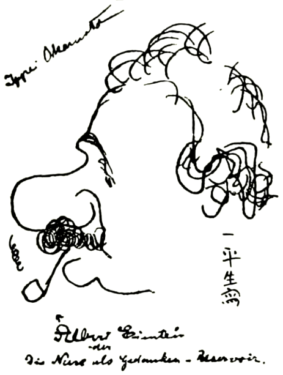
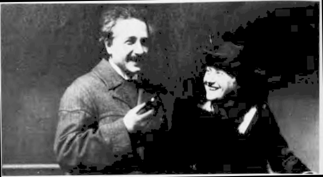
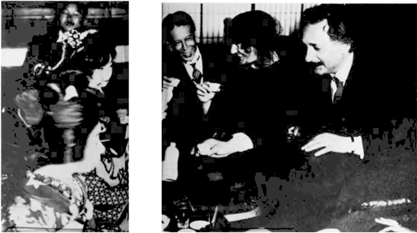

“The nose as a reservoir for
thoughts" cartoon by Ippei
Okamoto. (Courtesy AIP Niels
Bohr Library.)
岡本一平による漫画「鼻は思考の貯蔵庫」。（AIPニールス・ボーア図書館提供）
This translation of a lecture given in Kyoto on 14 December 1922
sheds light on Einstein’s path to the theory of relativity and offers
insights into many other aspects of his work on relativity.
1922年12月14日に京都で行われた講演のこの翻訳は、アインシュタインが相対性理論に至るまでの道のりを明らかにし、相対性理論に関する彼の業績の他の多くの側面についても洞察を与えてくれる。
It is known that when Albert Einstein
was awarded the Nobel Prize for Phy-
sics in 1922, he was unable to attend
the ceremonies in Stockholm in Decem-
ber of that year because of an earlier
commitment to visit Japan at the same
time. In Japan, Einstein gave a speech
entitled “How I Created the Theory of
Relativity” at Kyoto University on 14
December 1922. This was an impromp-
tu speech to students and faculty
members, made in response to a re-
quest by K. Nishida, professor of philo-
sophy at Kyoto University. Einstein
himself made no written notes. The
talk was delivered in German and a
running translation was given to the
audience on the spot by J. Ishiwara,
who had studied under Arnold Som-
merfeld and Einstein from 1912 to 1914
and was a professor of physics at To-
hoku University. Ishiwara kept care-
ful notes of the lecture, and published’
his detailed notes (in Japanese) in the
monthly Japanese periodical Kaizo in
1923; Ishiwara’s notes are the only
existing notes of Einstein’s talk. More
recently T. Ogawa published* a partial
translation to English from the Japa-
nese notes in Japanese Studies in the
History of Science.
アルベルト・アインシュタインが1922年にノーベル物理学賞を受賞した際、同時期に日本を訪問する予定が以前から決まっていたため、同年12月にストックホルムで行われた授賞式に出席できなかったことはよく知られています。来日中の1922年12月14日、アインシュタインは京都大学で「私が相対性理論を創り出した経緯」と題する講演を行いました。これは、京都大学の哲学者である西田幾多郎の依頼に応じ、学生や教員に向けて即興で行われた講演であり、アインシュタイン自身は原稿やメモを一切用意していませんでした。講演はドイツ語で行われ、その場での逐次通訳は石原純が担当しました。石原は1912年から1914年にかけてアルノルト・ゾンマーフェルトやアインシュタインに師事し、当時は東北大学の物理学教授を務めていました。石原はこの講演の記録を詳細に書き留め、1923年に月刊誌『改造』でその詳細な記録（日本語）を発表しました。この石原による記録は、アインシュタインのこの講演に関する現存する唯一の記録となっています。近年では、小川泰二がこの日本語の記録に基づいた部分的な英訳を、『Japanese Studies in the History of Science（科学史研究）』誌上で発表しています。
But Ogawa’s translation, as well as
the earlier notes by Ishiwara, are not
easily accessible to the international
physics community. However, the ear-
ly account by Einstein himself of the
origins of his ideas is clearly of great
historical interest at the present time.
And for this reason, I have prepared a
translation of Einstein’s entire speech
from the Japanese notes by Ishiwara.
It is clear that this account of Einstein’s
throws some light on the current con-
troversy® as to whether or not he was
aware of the Michelson—Morley experi-
ment when he proposed the special
theory of relativity in 1905; the account
also offers insight into many other
aspects of Einstein's work on relativity.
しかし、小川による翻訳や、それ以前の石原による記録は、国際的な物理学界にとって容易に参照できるものではありません。とはいえ、アインシュタイン自身が語ったその着想の起源に関する初期の記述は、今日において明らかに極めて高い歴史的関心を集めるものです。そこで私は、石原による日本語の記録に基づき、アインシュタインの講演全文を翻訳しました。このアインシュタインの記述が、1905年に彼が特殊相対性理論を提唱した際、マイケルソン・モーリーの実験について認識していたかどうかをめぐる現在の論争に一石を投じるものであることは明らかです。また、この記述は、相対性理論に関するアインシュタインの研究の他の多くの側面についても、重要な洞察を与えてくれるものです。
—Y. A. Ono
It is not easy to talk about how I
reached the idea of the theory of
relativity; there were so many hid-
den complexities to motivate my
thought, and the impact of each thought
was different at different stages in the
development of the idea. I will not
mention them all here. Nor will I count
the papers I have written on this sub-
ject. Instead I will briefly describe the
development of my thought directly
connected with this problem.
私がどのようにして相対性理論の着想に至ったかを語るのは容易なことではありません。そこには私の思考を駆り立てた数多くの複雑な要因が潜んでいましたし、その考えが発展していく各段階において、それぞれの思考がもたらした影響も異なっていたからです。それらすべてをここで述べるつもりはありませんし、この主題に関して私が執筆した論文の数を挙げることもしません。その代わりに、この問題と直接結びついた私自身の思考の発展の過程を、簡潔に説明することにします。
It was more than seventeen years ago
that I had an idea of developing the
theory of relativity for the first time.
While I cannot say exactly where that
thought came from, I am certain that it
was contained in the problem of the
optical properties of moving bodies
Light propagates through the sea of
ether, in which the Earth is moving. In
other words, the ether is moving with
respect to the Earth. I tried to find
clear experimental evidence for the
flow of the ether in the literature of
physics, but in vain.
私が初めて相対性理論の構築という着想を得たのは、17年以上も前のことでした。その考えが正確にどこから生じたのかを特定することはできませんが、それが「運動する物体の光学的性質」という問題の中に含まれていたことだけは確かです。光はエーテルの海の中を伝播しますが、その中で地球は運動しています。言い換えれば、地球に対してエーテルが動いているということです。私は物理学の文献を調べてエーテルの流れを示す明確な実験的証拠を見つけようと試みましたが、それは徒労に終わりました。
Then I myself wanted to verify the
flow of the ether with respect to the
Earth, in other words, the motion of the
Earth. When I first thought about this
problem, I did not doubt the existence
of the ether or the motion of the Earth
through it. I thought of the following
experiment using two thermocouples:
Set up mirrors so that the light from a
single source is to be reflected in two
different directions, one parallel to the
motion of the Earth and the other
antiparallel. If we assume that there is
an energy difference between the two
reflected beams, we can measure the
difference in the generated heat using
two thermocouples. Although the idea
of this experiment is very similar to
that of Michelson, I did not put this
experiment to the test
そこで私は、地球に対するエーテルの流れ、言い換えれば地球の運動を自ら検証してみたいと考えました。この問題について最初に考えた際、私はエーテルの存在や、その中を地球が運動していること自体を疑ってはいませんでした。私は、2つの熱電対を用いた次のような実験を考案しました。すなわち、単一の光源からの光が2つの異なる方向――一方は地球の運動と平行な方向、もう一方は逆平行な方向――に反射されるように鏡を配置するのです。もし反射された2つの光線間にエネルギーの差があると仮定すれば、2つの熱電対を用いて発生する熱量の差を測定できるはずです。この実験の着想はマイケルソンの実験と非常によく似ていましたが、結局、私はこの実験を実際に行うことはしませんでした。
While I was thinking of this problem
in my student years, I came to know the
strange result of Michelson’s experi-
ment. Soon I came to the conclusion
that our idea about the motion of the
Earth with respect to the ether is incor-
rect, if we admit Michelson’s null result
as a fact. This was the first path which
led me to the special theory of relati-
vity. Since then I have come to believe
that the motion of the Earth cannot be
detected by any optical experiment,
though the Earth is revolving around
the Sun.
学生時代にこの問題について考えていた際、私はマイケルソンの実験が示した奇妙な結果を知ることになりました。マイケルソンの実験で「ヌル（零）の結果」が得られたことを事実として受け入れるならば、エーテルに対する地球の運動についての我々の考え方は誤りであるという結論に、やがて私は至りました。これが、私を特殊相対性理論へと導いた最初の道筋でした。それ以来、地球は太陽の周りを公転しているにもかかわらず、いかなる光学実験によっても地球の運動を検出することはできない、と私は考えるようになりました。
I had a chance to read Lorentz’s
monograph of 1895. He discussed and
solved completely the problem of elec-
trodynamics within the first [order of]
approximation, namely neglecting
terms of order higher than \(v/c\), where \(v\)
is the velocity of a moving body and \(c\) is
the velocity of light. Then I tried to
discuss the Fizeau experiment on the assumption that the Lorentz equations
for electrons should hold in the frame
of reference of the moving body as well
as in the frame of reference of the
vacuum as originally discussed by Lor-
entz. At that time I firmly believed
that the electrodynamic equations of
Maxwell and Lorentz were correct.
Furthermore, the assumption that
these equations should hold in the ref-
erence frame of the moving body leads
to the concept of the invariance of the
velocity of light, which, however, con-
tradicts the addition rule of velocities
used in mechanics.
私はローレンツの1895年の論文を読む機会を得ました。彼は、第一近似の範囲内、すなわち \(v/c\)（ここで \(v\) は運動体の速度、\(c\) は光速）より高次の項を無視するという条件の下で、電気力学の問題を論じ、完全に解決していました。そこで私は、ローレンツが当初論じたように、電子に関するローレンツの方程式が真空の基準系だけでなく運動体の基準系においても成立すると仮定して、フィゾーの実験について考察を試みました。当時、私はマクスウェルやローレンツの電気力学の方程式が正しいものと確信していました。さらに、これらの方程式が運動体の基準系でも成立するという仮定は、光速不変という概念を導き出しますが、これは力学における速度の合成則と矛盾するものでした。

Albert and Elsa Einstein embarking for the US on the S.S. Rotterdam, 1921, a year before their
trip to Japan. (Courtesy AIP Niels Bohr Library.)
1921年、日本への旅の1年前に、S.S.ロッテルダム号で米国へ向かうアルベルト・アインシュタインとエルザ・アインシュタイン。（写真提供：AIPニールス・ボーア・ライブラリー）
Why do these two concepts contra-
dict each other? I realized that this
difficulty was really hard to resolve. I
spent almost a year in vain trying to
modify the idea of Lorentz in the hope
of resolving this problem
なぜこれら二つの概念は互いに矛盾するのだろうか。私は、この難問を解決するのが極めて困難であることに気づいた。この問題を解決しようと、ローレンツの考えを修正することに1年近くを費やしたが、それは徒労に終わった。
By chance a friend of mine in Bern
(Michele Besso) helped me out. It was a
beautiful day when I visited him with
this problem. I started the conversa-
tion with him in the following way:
“Recently I have been working on a
difficult problem. Today I come here to
battle against that problem with you.”
We discussed every aspect of this prob-
lem. Then suddenly I understood
where the key to this problem lay.
Next day I came back to him again and
said to him, without even saying hello,
“Thank you. I’ve completely solved the
problem.” An analysis of the concept
of time was my solution. Time cannot
be absolutely defined, and there is an
inseparable relation between time and
signal velocity. With this new concept,
I could resolve all the difficulties com-
pletely for the first time
偶然にも、ベルンにいる友人のミケーレ・ベッソが助け舟を出してくれました。彼のもとを訪ねてこの問題について相談したのは、ある晴れた日のことでした。私は彼にこう切り出しました。「最近、ある難問に取り組んでいるんだ。今日は君と一緒に、その問題に立ち向かおうと思って来たよ」。私たちはその問題のあらゆる側面について議論を重ねました。すると突然、問題の核心がどこにあるのかが理解できたのです。翌日、再び彼のもとを訪れた私は、挨拶もそこそこにこう言いました。「ありがとう。あの問題を完全に解決したよ」。その解決の鍵となったのは、時間の概念の分析でした。時間は絶対的なものとして定義することはできず、時間と信号の伝播速度の間には切り離せない関係があるのです。この新しい概念によって、私は初めて、あらゆる困難を完全に解決することができたのです。
Within five weeks the special theory
of relativity was completed. I did not
doubt that the new theory was reasona-
ble from a philosophical point of view.
I also found that the new theory was in
agreement with Mach’s argument.
Contrary to the case of the general
theory of relativity in which Mach’s
argument was incorporated in the the-
ory, Mach’s analysis had [only] indirect
implication in the special theory of
relativity.
特殊相対性理論は5週間で完成した。私は、この新しい理論が哲学的観点から見て妥当なものであると確信していた。また、この新理論がマッハの主張と整合していることにも気づいた。マッハの主張が理論そのものに組み込まれていた一般相対性理論の場合とは異なり、特殊相対性理論においてマッハの分析が持つ意味合いは、あくまで間接的なものであった。
This is the way the special theory of
relativity was created.
このようにして、特殊相対性理論は創り出されました。
My first thought on the general the-
ory of relativity was conceived two
years later, in 1907. The idea occured
suddenly. I was dissatisfied with the
special theory of relativity, since the
theory was restricted to frames of refer-
ence moving with constant velocity rel-
ative to each other and could not be
applied to the general motion of a reference frame. I struggled to remove
this restriction and wanted to formu-
late the problem in the general case.
一般相対性理論に関する最初の着想を得たのは、それから2年後の1907年のことでした。その考えは突然ひらめいたのです。私はそれまでの特殊相対性理論に不満を抱いていました。というのも、その理論は互いに等速で運動する座標系に限定されており、座標系の一般的な運動には適用できなかったからです。私はこの制約を取り除き、一般的な状況において問題を定式化したいと考えていました。

A Japanese Tea Ceremony. The Einsteins’
1922 trip included the usual tourist
attractions as well as scientific ones.
(Einstein Archives, courtesy AIP Niels Bohr
Library.)
日本の茶道。アインシュタイン夫妻の1922年の旅行には、一般的な観光名所だけでなく、科学的な見どころも含まれていました。
（アインシュタイン・アーカイブ、AIPニールス・ボーア図書館提供）
In 1907 Johannes Stark asked me to
write a monograph on the special the-
ory of relativity in the journal Jahr-
buch der Radioaktivitat. While I was
writing this, I came to realize that all
the natural laws except the law of
gravity could be discussed within the
framework of the special theory of
relativity. I wanted to find out the
reason for this, but I could not attain
this goal easily.
1907年、ヨハネス・シュタルクから『放射能年報（Jahrbuch der Radioaktivität）』誌に特殊相対性理論に関する論文を執筆するよう依頼された。その執筆の過程で、私は、重力の法則を除くあらゆる自然法則が特殊相対性理論の枠組みの中で論じられ得ることに気づいた。その理由を突き止めたいと考えたが、その目的を容易に達成することはできなかった。
The most unsatisfactory point was
the following: Although the relation-
ship between inertia and energy was
explicitly given by the special theory of
relativity, the relationship between in-
ertia and weight, or the energy of the
gravitational field, was not clearly elu-
cidated. I felt that this problem could
not be resolved within the framework
of the special theory of relativity.
最も不満な点は次のことでした。すなわち、慣性とエネルギーの関係は特殊相対性理論によって明確に示されていましたが、慣性と重量、あるいは重力場のエネルギーとの関係は、明確に解明されていなかったのです。私は、この問題は特殊相対性理論の枠組みの中では解決できないと感じていました。
The breakthrough came suddenly
one day. I was sitting on a chair in my
patent office in Bern. Suddenly a
thought struck me: If a man falls
freely, he would not feel his weight. I
was taken aback. This simple thought
experiment made a deep impression on
me. This led me to the theory of gra-
vity. I continued my thought: A fall-
ing man is accelerated. Then what he
feels and judges is happening in the
accelerated frame of reference. I decid-
ed to extend the theory of relativity to
the reference frame with acceleration.
I felt that in doing so I could solve the
problem of gravity at the same time. A
falling man does not feel his weight
because in his reference frame there is
a new gravitational field which cancels
the gravitational field due to the Earth.
In the accelerated frame of reference,
we need a new gravitational field.
ある日、突然のひらめきが訪れました。私はベルンの特許局で椅子に座っていました。その時、ふとある考えが頭をよぎったのです。「もし人が自由落下しているなら、その人は自分の重さを感じないだろう」。私はハッとしました。この単純な思考実験は、私に強い印象を与えました。これが、重力の理論へとつながるきっかけとなったのです。私は思考をさらに進めました。「落下する人は加速している。つまり、その人が感じたり判断したりすることは、加速する座標系の中で起きていることなのだ」。そこで私は、相対性理論を加速する座標系にまで拡張しようと決心しました。そうすれば、重力の問題も同時に解決できるのではないかと考えたのです。落下する人が自分の重さを感じないのは、その人の座標系の中に、地球による重力場を打ち消す新たな重力場が生じているからです。つまり、加速する座標系においては、新たな重力場が必要となるのです。
I could not solve this problem com-
pletely at that time. It took me eight
more years until I finally obtained the
complete solution. During these years
I obtained partial answers to this prob-
lem.
当時、私はこの問題を完全には解決できませんでした。完全な解にたどり着くまでに、さらに8年を要しました。その間、私はこの問題に対する部分的な答えを得ていました。
Ernst Mach was a person who insist-
ed on the idea that systems that have
acceleration with respect to each other
are equivalent, This idea contradicts
Euclidean geometry, since in the frame
of reference with acceleration Euclid-
ean geometry cannot be applied. De-
scribing the physical laws without ref-
erence to geometry is similar to
describing our thought without words.
We need words in order to express
ourselves. What should we look for to
describe our problem? This problem
was unsolved until 1912, when I hit
upon the idea that the surface theory of
Karl Friedrich Gauss might be the key
to this mystery. I found that Gauss’
surface coordinates were very mean-
ingful for understanding this problem.
Until then I did not know that Bern-
hard Riemann [who was a student of
Gauss’] had discussed the foundation of
geometry deeply. I happened to re-
member the lecture on geometry in my
student years [in Zurich] by Car] Frie-
drich Geiser who discussed the Gauss
theory. I found that the foundations of
geometry had deep physical meaning
in this problem
エルンスト・マッハは、互いに対して加速度運動をしている系は等価であるという考えを主張した人物でした。この考えはユークリッド幾何学と矛盾します。なぜなら、加速度を伴う座標系においては、ユークリッド幾何学を適用できないからです。幾何学に言及せずに物理法則を記述することは、言葉を使わずに思考を表現することに似ています。私たちは自分自身を表現するために言葉を必要とします。では、この問題を記述するために何に目を向けるべきでしょうか？この問題は1912年まで未解決のままでしたが、その時、カール・フリードリヒ・ガウスの曲面論こそがこの謎を解く鍵になるかもしれないという着想を得たのです。私は、ガウスの曲面座標がこの問題を理解する上で極めて重要であることに気づきました。それまで私は、ベルンハルト・リーマン（ガウスの弟子）が幾何学の基礎について深く論じていたことを知りませんでした。ふと、学生時代（チューリッヒでのこと）にカール・フリードリヒ・ガイザーがガウスの理論について講義したことを思い出したのです。そして、この問題において、幾何学の基礎が深い物理的意味を持っていることを発見したのです。
When I came back to Zurich from
Prague, my friend the mathematician
Marcel Grossman was waiting for me.
He had helped me before in supplying
me with mathematical literature when
I was working at the patent office in
Bern and had some difficulties in ob-
taining mathematical articles, First he
taught me the work of Curbastro Gre-
gorio Ricci and later the work of Rie-
mann. I discussed with him whether
the problem could be solved using Rie-
mann theory, in other words, by using
the concept of the invariance of line
elements. We wrote a paper on this
subject in 1913, although we could not
obtain the correct equations for gra-
vity. I studied Riemann’s equations
further only to find many reasons why
the desired results could not be at-
tained in this way
プラハからチューリッヒに戻ったとき、友人の数学者マルセル・グロスマンが私を待っていました。彼は以前、私がベルンの特許局に勤務していた際、数学の文献を入手するのに苦労していた私にそれらを提供して助けてくれたことがありました。彼はまずグレゴリオ・リッチ＝クルバストロの研究を、続いてリーマンの研究を私に教えてくれました。私は彼と、リーマンの理論、言い換えれば「線素の不変性」という概念を用いてその問題を解決できるかどうかについて議論しました。私たちは1913年にこの主題に関する論文を執筆しましたが、重力に関する正しい方程式を導き出すことはできませんでした。その後、私はリーマンの方程式をさらに深く研究しましたが、その方法では望ましい結果が得られない理由が数多くあることを知るに至りました。
After two years of struggle, I found
that I had made mistakes in my calcu-
lations. I went back to the original
equation using the invariance theory
and tried to construct the correct equa-
tions. In two weeks the correct equa-
tions appeared in front of me!
2年間にわたる苦闘の末、私は自分の計算に誤りがあったことに気づきました。そこで不変量理論を用いて元の式に立ち返り、正しい式を導き出そうと試みました。すると2週間後、正しい式が目の前に現れたのです！
Concerning my work after 1915, I
would like to mention only the problem
of cosmology. This problem is related
to the geometry of the universe and to
time. The foundation of this problem
comes from the boundary conditions of
the general theory of relativity and the
discussion of the problem of inertia by
Mach. Although I did not exactly un-
derstand Mach’s idea about inertia, his
influence on my thought was enor-
mous.
1915年以降の私の研究について、ここでは宇宙論の問題にのみ触れたいと思います。この問題は、宇宙の幾何学および時間に関わるものです。その基礎となっているのは、一般相対性理論における境界条件と、マッハによる慣性の問題についての考察です。慣性に関するマッハの考えを私が正確に理解していたわけではありませんが、私の思考に対する彼の影響は甚大なものでした。
I solved the problem of cosmology by
imposing invariance on the boundary
condition for the gravitational equa-
tions. I finally eliminated the bound-
ary by considering the Universe to be a
closed system. As a result, inertia
emerges as a property of interacting
matter and it should vanish if there
were no other matter to interact with.
I believe that with this result the gen-
eral theory of relativity can be satisfac-
torily understood epistemologically.
私は、重力方程式の境界条件に不変性を課すことによって、宇宙論の難問を解決しました。宇宙を閉じた系とみなすことで、ついに境界という概念を排除したのです。その結果、慣性とは相互作用する物質の性質として現れるものであり、相互作用すべき他の物質が存在しなければ消滅するはずである、ということが導かれます。この成果によって、一般相対性理論を認識論的にも十分に理解できるようになったと私は確信しています。
This is a short historical survey of my
thoughts in creating the theory of rela-
tivity.
これは、私が相対性理論を構築するに至った思考の過程をたどる、簡潔な歴史的概観です。
The translator is grateful to the late Profes-
sor R. S. Shankland for encouragement and
for informing him of reference 2
翻訳者は、故R. S. シャンクランド教授の激励と、参考文献2についてご教示いただいたことに感謝の意を表します。